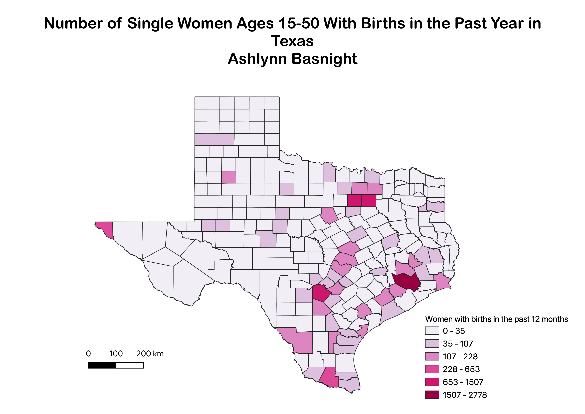

Homework 6: Census data choropleth
Ashlynn Basnight
This map shows the number of single Texan women, ages 15-50, who have had a birth in the past 12 months. Notably, this data is from 2021, potentially showing a change in data resulting from changes in reproductive rights in the state. The spatial representation of this data may show where abortion laws affect single women the most in Texas.

Data used for this project
CSV dataset
Link to shapefile